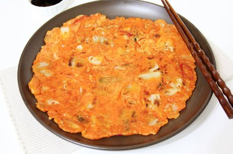

BEST:야식
-

전
비 오는 날이면 특히 많이 생각나죠 ㅎㅎ 전에 막걸리한잔! 조리가 간편하고 정말 맛있기 때문에 인기가 많아요~
-

햄버거
늦은 밤 음식을 해 먹기 귀찮을 때! 새벽까지 문 열고 있는 햄버거가 최고죠~~
-

비빔밥
집에 있는 반찬을 이용해 고추장 넣고 참기름 한 방울!! 정말 맛있죠~~
-

떡볶이
집에 간단한 재료만 있다면 빨리 해 먹을 수 있는 간식! 쫄깃쫄깃 매콤한 떡볶이~~
-

만두
만두는 언제 먹어도 정말 맛있죠 ㅎㅎ 냉동만두는 전자레인지에 돌려주기만 하면 돼요~ 물만두, 찐만두, 튀김만두, 군만두 등 종류도 엄청 많아요
-

보쌈
배추에 김치, 굴, 무김치를 올려 싸먹으면 정말 야식으로 최고죠!